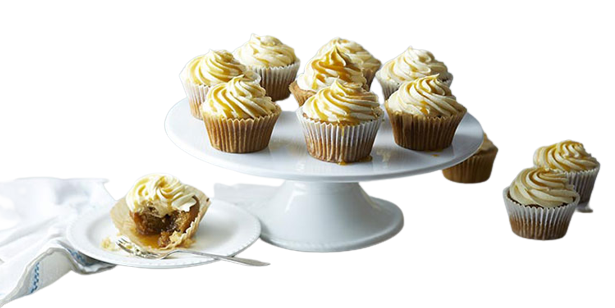

Description
These cupcakes blend two of my favorite flavors: orange and vanilla! Reminiscent of a childhood ice cream pop treat, these cupcakes will make you feel like a kid again!
Ingredients
- 1 (18.25 ounce) package orange cake mix
- ¾ cup creamy salad dressing (such as Miracle Whip®)
- 1 (1.3 ounce) envelope dry whipped topping mix (such as Dream Whip®)
- ¾ cup freshly squeezed orange juice
- 3 large eggs
- 2 tablespoons grated orange zest
- 1 (13 ounce) jar marshmallow creme
- ½ cup unsalted butter at room temperature
- ½ cup vegetable shortening
- ¼ teaspoon vanilla extract
- 2 drops orange paste food coloring, or as desired
- 4 cups confectioners' sugar
Directions
- Step 1 - Preheat oven to 350 degrees F (175 degrees C). Line 24 muffin cups with paper liners.
- Step 2 - Beat together the orange cake mix, creamy salad dressing, whipped topping mix, 3/4 cup orange juice, eggs, and 2 tablespoons orange zest in a large bowl with an electric mixer on low speed until mixture is moist, about 1 minute. Scrape down the sides of the bowl with a spatula, then increase speed to medium and continue beating until well blended, about 2 minutes more. Fill the prepared cupcake cups about 2/3 full of batter.
- Step 3 - Bake in the preheated oven until a toothpick inserted into the center of a cupcake comes out clean, about 15 minutes. Cool in the pans for 10 minutes before removing to cool completely on a wire rack before frosting.
- Step 4 - To make cream topping: Beat the marshmallow creme, 1/2 cup unsalted butter, and 1/2 cup shortening in a bowl with an electric mixer until smooth and creamy. Top each cooled cupcake with a 1/2-inch thick layer of the cream topping, using a knife to spread the the topping flat. Allow about 1/2 inch of the orange cupcake to show below the white layer.
- Step 5 - To make orange butter cream: Beat 1/2 cup unsalted butter and 1/2 cup shortening together in a bowl until light and fluffy. Mix in 1/4 cup orange juice, zest of 1 orange, vanilla extract, and food coloring until well combined. Gradually beat in the confectioners' sugar until smooth.
- Step 6 - Transfer the frosting to a piping bag fitted with a large star tip, and pipe a decorative layer of orange butter cream, ending in a peak, over the cream topping on the cupcakes.